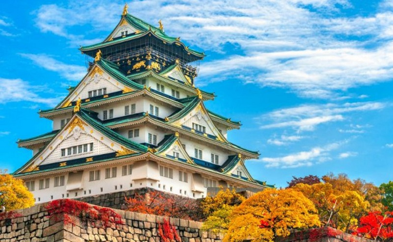

Osaka

Osaka adalah sebuah kota di wilayah Kansai, Jepang. Selain sebagai ibu kota Prefektur Osaka, kota ini ditetapkan sebagai salah satu Kota Terpilih berdasarkan Undang-Undang Otonomi Lokal. Osaka adalah kota berpenduduk terbesar nomor tiga di Jepang setelah Tokyo dan Yokohama. Kota ini terletak di pulau Honshu, di mulut Sungai Yodo di Teluk Osaka. Osaka adalah kota terbesar di kawasan Keihanshin sebagai pusat industri dan pelabuhan untuk daerah metropolitan Osaka-Kobe-Kyoto. Di sebelah timur, Osaka bertetangga dengan Kyoto dan Nara, dan di sebelah barat dengan kota Kobe.
Keihanshin adalah wilayah metropolitan berpenduduk terbesar nomor dua di Jepang, dan salah satu wilayah metropolitan terbesar di dunia dengan jumlah penduduk sekitar 18 juta orang, sekaligus wilayah metropolitan terbesar nomor dua di Jepang berdasarkan PDB dan wilayah metropolitan terbesar nomor tujuh di dunia.
Osaka merupakan sebuah metropolis air yang dikenal dengan sungai-sungainya dan jumlah jembatan terbanyak di Jepang. Ada dua pusat kota di Osaka, yakni Umeda di sebelah utara, dan Namba di sebelah selatan. Kedua pusat kota ini dihubungkan oleh jalan utama yang bernama Midosuji. Kantor-kantor perdagangan, bank, dan konglomerat Jepang umumnya terpusat di sekitar Jalan Midosuji. Jalan Midosuji dikenal dengan pemandangan daun-daun pohon ginkgo yang menguning di musim gugur.